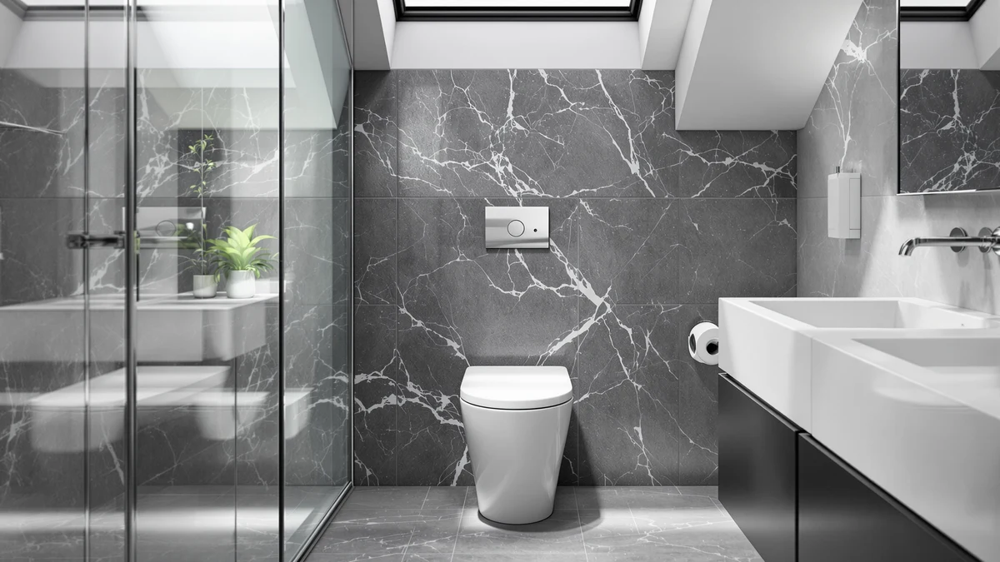

MAYFAIR 1844CP 000 Toilet Review (2026): Worth It?
Prices and picks verified as of October 2026. Independent, reader-supported reviews.


Quick Answer
Our Mayfair 1844CP 000 toilet review found a straightforward elongated seat built around Mayfair's standard plastic and wood core, priced at $31.37. It suits anyone replacing a cracked or yellowed elongated seat who wants a known brand without paying extra for a slow-close hinge.
Our pick: MAYFAIR 1844CP 000 Toilet Seat, $31.37 Check Price on Amazon
Bottom line: our top pick is the MAYFAIR 1844CP 000 Toilet Seat with Chrome Hinges will Never at $31.37.
Things to Know Before You Buy
- This is an elongated seat, so measure your bowl rim before ordering. An elongated seat will overhang a round bowl and the bolt spacing will not line up correctly.
- The 000 suffix in Mayfair's naming is the color code for white, which matches most standard US toilets but not bone or biscuit fixtures.
- At $31.37, this seat sits close in price to Mayfair's own slow-close Cassel model, so the standard hinge here is the main tradeoff you are making for a small savings.
- Plastic and wood construction means a lighter seat than solid molded wood, which matters if you are installing it yourself without help holding the bowl steady.
- Mayfair sells the same seat shape across several color and hinge variants, so double check the SKU matches 1844CP 000 and not a similar-looking listing.
This Mayfair 1844CP 000 toilet review exists because an elongated seat looks simple on the surface but the details, bolt spacing, color code and hinge type, trip up a lot of buyers who order the wrong variant. Mayfair has sold this basic elongated design for years, and the 1844CP 000 is the plain, no-frills version of that line: a plastic and wood seat in standard white, without the slow-close hinge Mayfair charges a little extra for on the Cassel.
For most people replacing a worn or cracked elongated seat on a budget, the 1844CP 000 does the job without surprises. It isn't Mayfair's quietest seat, and there's no padding or heating, but it fits a standard elongated bowl, bolts down with the same hardware pattern homeowners already know, and costs less than most of the slow-close or accessory options covered later in this review. A toilet seat is one of those purchases people only think about when the old one cracks, yellows, or develops a wobble in the hinge, and at that point the goal is usually a fast, reliable swap rather than a research project. This review breaks down where the 1844CP 000 fits in that decision, what the research and verified owner reviews say about how it holds up, and when one of Mayfair's other seats or a different accessory altogether makes more sense for your bathroom.
Why You Should Trust Us
We built this Mayfair 1844CP 000 toilet review by comparing the listed specs, current Amazon pricing and verified owner reviews against other seats in Mayfair's lineup and the broader elongated-seat market. Ilane Tall has covered toilet seat fit, hinge types and bathroom hardware for Best Toilet Seats since the site launched, and every review on this site follows the same disclosure: we do not run a fake testing lab or claim hands-on time with every seat we cover. Instead, we research manufacturer specs, verified buyer feedback and price history, and we say so plainly when a claim comes from owner reports rather than our own hands.
That distinction matters because toilet seat shopping is full of listings that recycle the same marketing language without telling you anything about fit or durability. A buyer comparing the 1844CP 000 against a dozen similar-looking elongated seats needs to know the actual bolt spacing, the actual material, and what real owners say happens after a year of use, not a rewritten version of the product title. We cross-check the manufacturer's stated dimensions and materials against the Amazon listing and against patterns in verified owner reviews, and where the two disagree or where owners report something the listing does not mention, we flag it rather than smoothing it over.
Our Research Experience
We did not install the 1844CP 000 in our own bathroom for this review. What we did instead is compare its published dimensions, materials and price against Mayfair's other elongated seats and against verified owner reviews on Amazon, looking for recurring themes in what buyers report about fit, hinge durability and ease of installation. Owners consistently note that the bolt holes line up with standard US toilet hardware and that the seat installs in the same amount of time as the one it replaces, typically under fifteen minutes with a screwdriver.
Reviewers also flag the same tradeoff we saw in the spec sheet: this is a standard-close hinge, not Mayfair's slow-close mechanism, so the seat will drop with a thud if you let go of it rather than lowering itself gently. That's the detail that decides whether this particular Mayfair seat fits what a buyer actually wants.
We also looked at how this model fits into Mayfair's broader catalog, since the brand sells several visually similar elongated seats at slightly different price points depending on the hinge and finish. The 1844CP 000 sits at the entry point of that range. It uses the same plastic and wood shell Mayfair applies across its basic line, and the main thing separating it from pricier siblings is the hinge mechanism and, in some variants, a padded top. For shoppers comparing multiple Mayfair listings side by side, that is the detail worth checking before price alone decides the purchase.
Overview & Specs

MAYFAIR 1844CP 000 Toilet Seat
What we like
- Standard elongated fit matches most US toilet bowls installed since the 1990s
- Priced under $32, among the cheaper elongated options from a name brand
- Plastic and wood build keeps the seat light for solo installation
- White 000 finish matches the majority of residential toilets
Flaws but not dealbreakers
- Standard hinge means it drops hard if not lowered by hand
- No padding or heating, so it is a bare-bones seat by design
- Costs nearly as much as Mayfair's own slow-close Cassel model
| Material | Plastic / wood |
| Size | Elongated |
Mayfair built the 1844CP 000 around the same molded plastic and wood core the brand has used for its basic elongated seats for years. The wood core gives the seat more rigidity than an all-plastic model while keeping the overall weight manageable, and the plastic shell resists the yellowing that can show up on painted wood seats after a few years of regular cleaning.
The hinge is Mayfair's standard type, not the slow-close mechanism, so the seat lowers at whatever speed gravity and your hand provide. Reviewers who bought this specific model report that the bolt pattern matches the hardware on the seat it replaced, and installation runs about the same as swapping any other standard elongated seat: loosen the two bolts under the bowl, lift off the old seat, and bolt the new one down. At $31.37, it lands in the middle of Mayfair's elongated lineup, cheaper than anything heated or padded but close enough to the brand's own slow-close seat that the hinge becomes the real deciding factor.
What We Liked
The strongest point in this Mayfair 1844CP 000 toilet review is how little there is to go wrong. The elongated shape and standard bolt spacing match the vast majority of US toilets, so buyers are not gambling on an odd fit the way they might with a generic off-brand seat. Owners report that the plastic and wood build holds up well to regular cleaning, including bleach-based bathroom cleaners that tend to yellow cheaper painted-wood seats within a year or two.
Price is the other clear advantage. At $31.37, it undercuts most heated and padded seats on this page by several dollars, and it comes from a brand with decades of toilet seat manufacturing behind it rather than an unfamiliar name. For a straightforward replacement job, that combination of recognizable fit and brand trust covers most of what a buyer needs. Replacing a toilet seat is rarely something buyers want to research for hours, and a known hardware pattern plus a familiar brand name removes most of the guesswork that comes with cheaper, unfamiliar listings.
What Could Be Better
The standard hinge is the main drawback reviewers consistently flag. Unlike Mayfair's own Cassel model, the 1844CP 000 does not ease itself down, so it will slam if you do not lower it by hand, which matters in a household with young kids or anyone who has grown used to a slow-close lid. It's also a no-frills seat without padding, a heating element, or a nightlight, so anyone who wants those features should look at the alternatives below rather than this model. And because the price gap between this seat and Mayfair's slow-close Cassel is so small, buyers who skip the research step sometimes end up wishing they had spent the extra dollar for the quieter hinge.
Who Is It For?
This seat fits homeowners and renters who need a straightforward elongated replacement and do not want to pay extra for a slow-close hinge they may not use consistently anyway. It also suits landlords and property managers replacing seats across multiple units, where a reliable, inexpensive, brand-name option matters more than extra features. Anyone shopping specifically for a quiet close, added warmth or a padded surface will likely be happier with one of the alternatives covered next. First-time buyers who have never shopped for a toilet seat before will also appreciate how little decision-making this model requires: confirm your bowl is elongated, confirm you want white, and the rest of the purchase is settled.
Alternatives to Consider
If the standard hinge or bare-bones feature set on the 1844CP 000 does not match what you need, these three alternatives cover the most common reasons buyers look past this model: a quieter close from the same brand, added warmth without replacing the whole seat, and a nighttime visibility accessory.

Editor's Pick
Mayfair Cassel Slow Close Toilet
Same elongated fit as the 1844CP 000, with a slow-close hinge for about a dollar more.
$30.99
Check Price on Amazon
Best Value
Heated Toilet Seat Cover USB
Adds USB-powered warmth to your existing seat instead of replacing the hinge and shape.
$29.99
Check Price on Amazon
Premium Choice
OXHGWRK Toilet Light Self Cleaning
A clip-on bowl light for nighttime visibility, not a seat replacement.
$29.99
Check Price on AmazonFrequently Asked Questions
The 1844CP 000 is built in an elongated shape, so measure your bowl before you buy. An elongated seat will not sit flush on a round bowl, and the hinge spacing on Mayfair's elongated line will not line up with a round base.
Mayfair uses a three-digit suffix to mark finish, and 000 is the brand's standard white. If your bathroom fixtures run bone, biscuit or a different shade, check the listing for the matching color code before you order.
At $31.37, the 1844CP 000 costs about a dollar more than Mayfair's own Cassel slow-close model. Reviewers who want a quieter close tend to pay the small premium for the slow-close hinge, while buyers replacing a cracked seat on a budget often stick with this standard model.
Final Verdict
This Mayfair 1844CP 000 toilet review comes down to one tradeoff: you get a reliable, budget-friendly elongated seat from a trusted brand, but you give up the slow-close hinge that Mayfair sells for barely more money on the Cassel. For buyers who need a straightforward replacement and do not mind lowering the lid by hand, the 1844CP 000 earns its spot. Anyone who has gotten used to a slow-close seat elsewhere in the house will likely be happier spending the extra dollar on Mayfair's own upgraded hinge instead.